shorts
Meet Temporal
Who created Temporal, where it comes from, where it stands today, and why it matters for AI.
Introduction to Durable Execution
The principles of Durable Execution with Temporal Workflows.
Human-in-the-Loop
How a Temporal Workflow waits for a person's approval, for minutes or days, then picks up where it left off.
Durable AI Agents
How an AI agent works, and why it needs Durable Execution to keep its progress.
Temporal Agent Harness
Run AI agents as durable Temporal Workflows, built with the AI SDKs you already use.
Tuning Temporal Workers
How Temporal Workers take work, and how to find and fix the bottleneck behind a growing Task Queue backlog.
Security
Where your code runs, what Temporal stores, who holds the keys, and what Temporal Proxy adds.
Temporal Proxy 1.0
Ready for production: one gateway that keeps credentials and encryption out of your Workers.
AI Agent Security
Real incidents, and how Temporal keeps AI agents in check.